¿Qué es CSS?
CSS (Cascading Style Sheets) es un lenguaje que nos permite dar estilo y
diseño a nuestras páginas web. Es fundamental para:
- Controlar la apariencia visual
- Crear diseños responsivos
- Mejorar la experiencia del usuario
- Mantener consistencia en el diseño
JavaScript en la Web
JavaScript es un lenguaje de programación esencial que permite:
- Crear interactividad en las páginas web
- Manipular el contenido en tiempo real
- Validar formularios
- Realizar peticiones al servidor
- Crear animaciones y efectos visuales
Tabla de Atributos CSS
| Atributo | Descripcion | Valores posibles | Ejemplo | Imagen | Fuente |
|---|---|---|---|---|---|
| Font-size | Tamaño de la fuente | px, em, rem, % | font-size: 16px; |
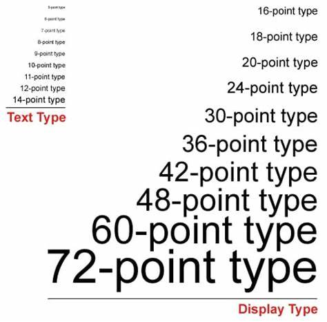 | MDN Web Docs |
| Border-radius | Redondea las esquinas de un elemento | px, em, rem, % | border-radius: 10px; |
 |
MDN Web Docs |
| Display | Controla la apariencia de un elemento | block, inline, inline-block, flex, grid, none | display: flex; |
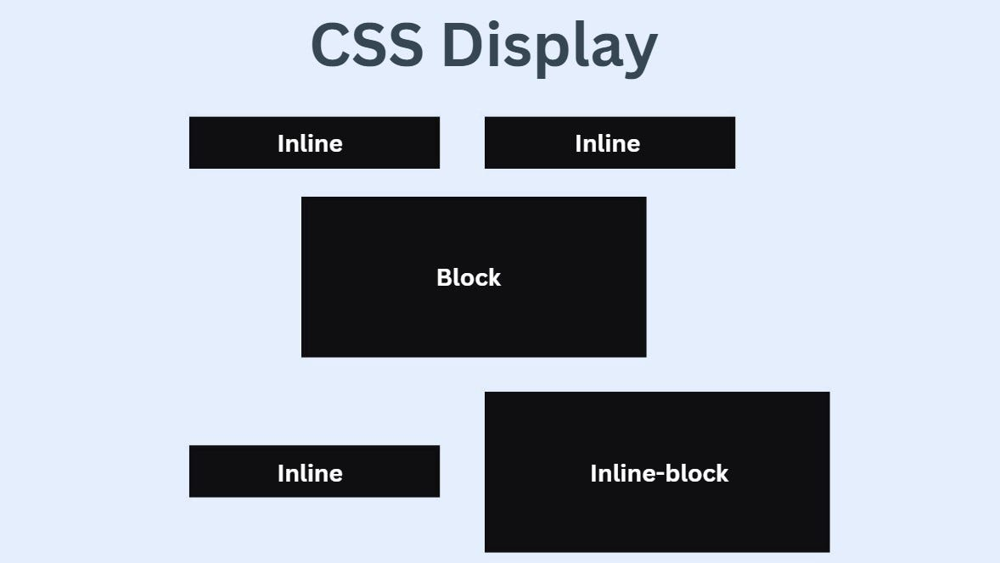 | MDN Web Docs |
| Flexbox(display:flex) | Permite organizar elementos en una sola dimensión, es decir, ayudaa a distribuir el espacio entre los ítems de una interfaz y mejorar las capacidades de alineación |
flex-direction, justify-content, align-items, flex-wrap | display: flex; |
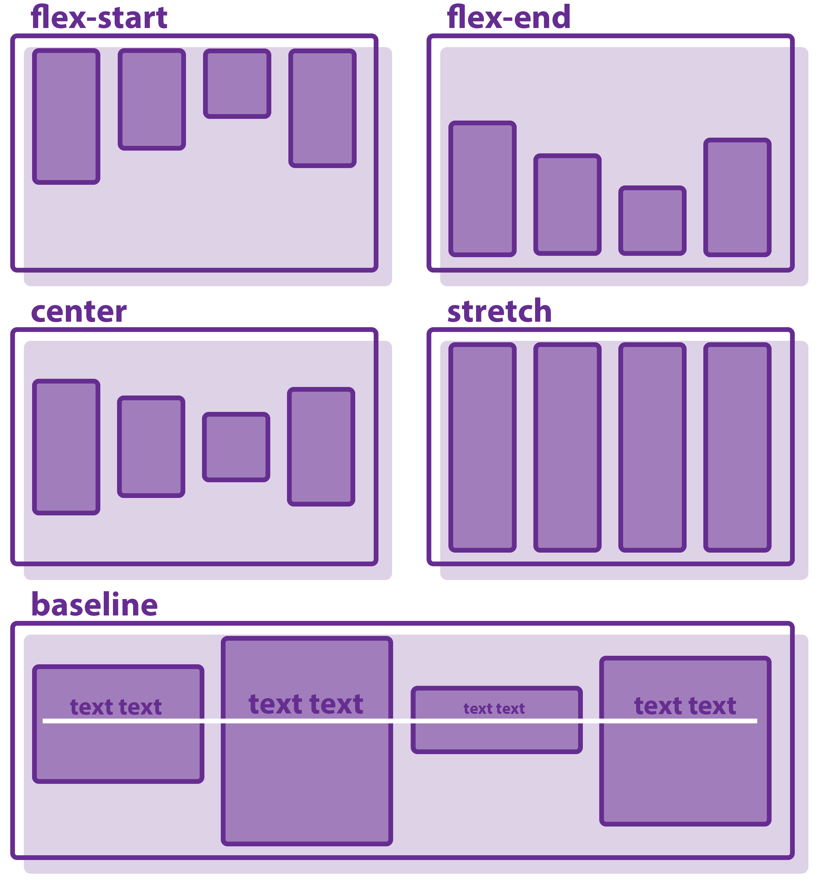 | MDN Web Docs |
| Position | Define como posicionar un elemento | static, relative, absolute, fixed, sticky | position: absolute; |
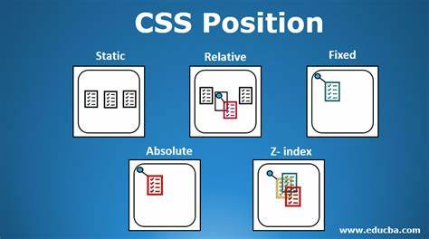 | MDN Web Docs |
| Box-shawdon | Aplica sombras a un elemento | offset-x offset-y blur-radius color, puede incluir inset | box-shadow: 10px 10px 10px 10px; |
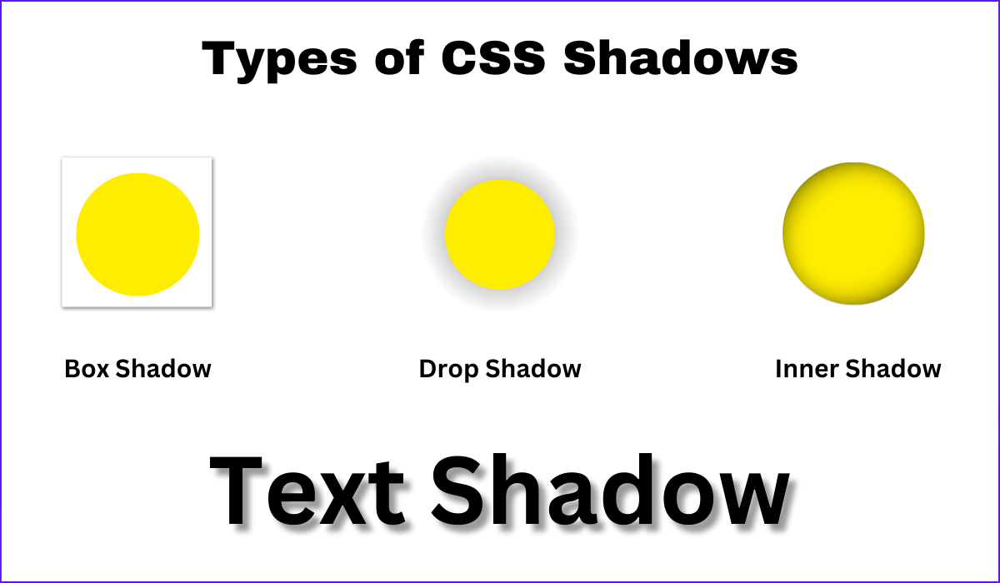 | MDN Web Docs |
| Overflow | Controla lo que pasa cuando el contenido sobrepasa su contenedor | visible, hidden, scroll, auto | overflow: hidden; |
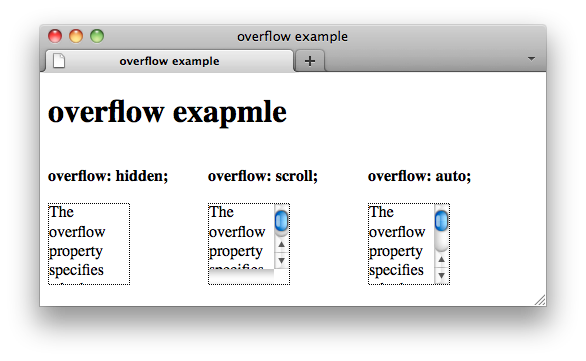 | MDN Web Docs |
| Z-index | Controla el orden de los elementos | auto, number | z-index: 1; |
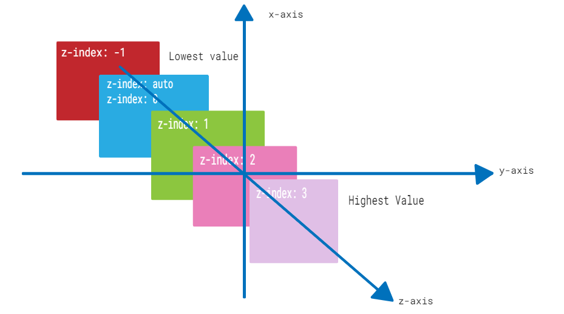 | MDN Web Docs |
| Opacity | Controla la transparencia de un elemento | De 0 (completamente transparente) a 1 (opaco) | opacity: 0.5; |
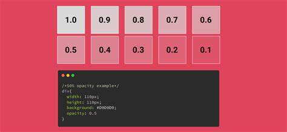 | MDN Web Docs |
| Margin y Padding | Controla el espacio alrededor de un elemento. Margin separa elementos externos; Padding el espacio interno. |
px, em, rem, % | margin: 10px; |
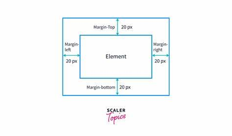 | MDN Web Docs |
| hsl | Permite definir colores, su sigla significa: Color (hue), Saturación (saturation), Luminosidad (luminosity) |
hsl(hue, saturation, lightness) | hsl(240, 100%, 50%); |
 |
CSS-Tricks |
| Transition | Permite animaciones mas fluidas | all, color, 0.3s, ease, etc. | transition: all 0.3s ease; |
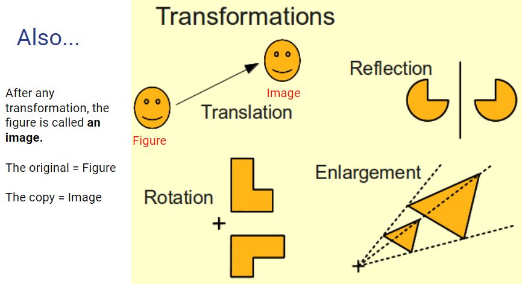 | MDN Web Docs |
| Line-height | Controla el espacio entre las lineas de un texto | normal, 1.5, 20px, etc. | line-height: 1.5; |
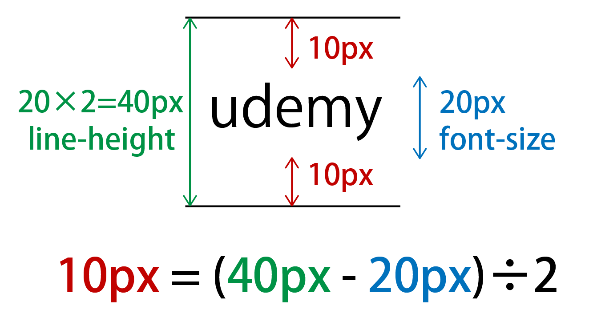 | MDN Web Docs |
| Filter | Controla el efecto visual de un elemento | blur, brightness, contrast, etc. | filter: blur(10px); |
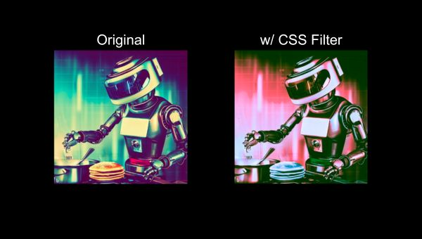 | MDN Web Docs |